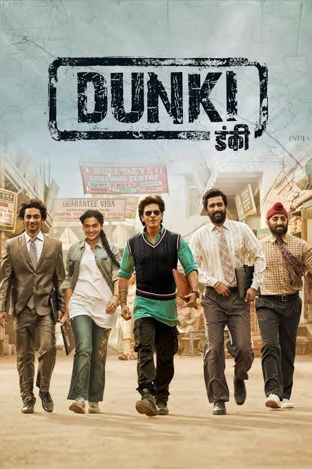

Dunki Review: Expected More!

Rating:⭐⭐⭐
I had high hopes for this film, mainly because it is Shah Rukh Khan collaborating with the goat, Rajkumar Hirani.
But after watching this, I felt kind of disappointed. Well, I actualy fet disappointed with the "first drop" of this film,
by SRK's look in the film, because it reminded me of him in Zero, in which we know what happened to that film. I will say, the
music was pretty good. The emotional factor in this film, was a hit or miss for me, becausse there were some scenes that hit, while
others that didn't. This was kind of a high take, but old SRK scenes in this film didn't have to be 20 mins, I felt like this should've
been a post-climax scene. The main thing is that the Rajkumar Hirani effect is missing in this film. This could very well be his weakest
film. Overall a time-pass entertainer.